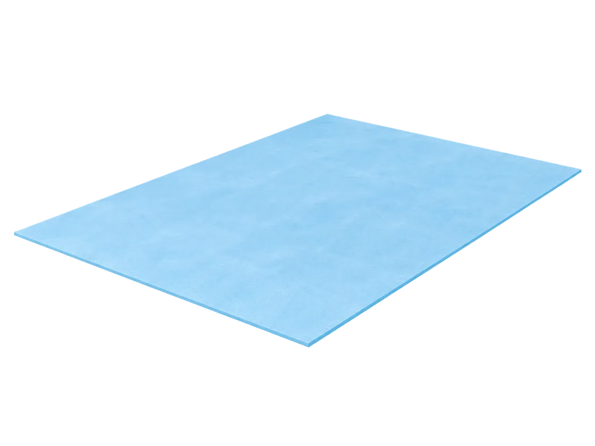
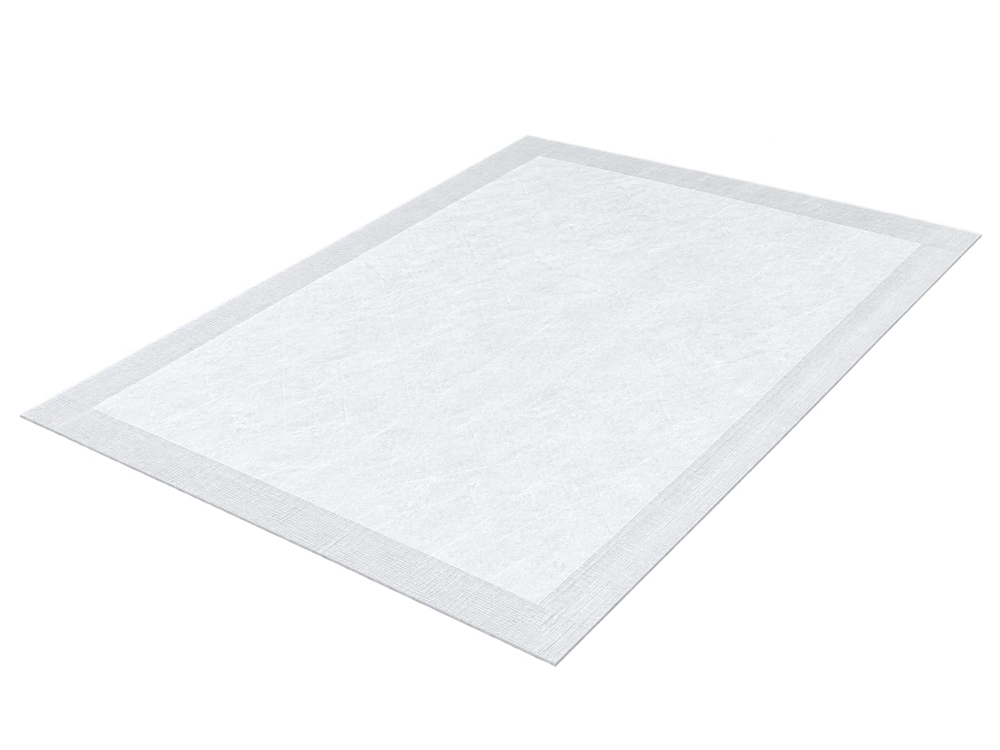
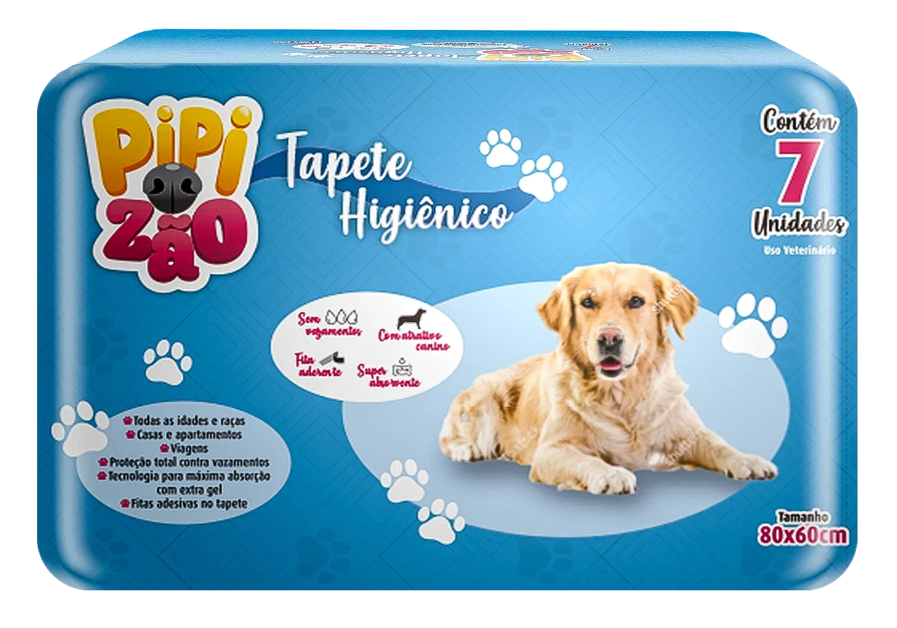

Soluções que cuidam do seu mundo
Mais absorçãoMenos preocupação
Tapetes higiênicos desenvolvidos para tornar o cuidado diário mais simples, seguro e confortável.
Superabsorção
que seca de verdadeMais proteção
contra vazamentosConforto para ele,
tranquilidade para vocêTecnologia e cuidado
em cada detalhe
Tecnologia de verdade
Proteção em cada camada
Uma estrutura desenvolvida para absorver rápido e manter a superfície mais seca.




Superfície seca
Não-tecido premium que mantém a patinha sempre seca.
Núcleo de alta absorção
Absorve rápido e retém o líquido por mais tempo.
Barreira antivazamento
Filme impermeável que protege o piso e evita vazamentos.
Fitas de fixação
Mantém o tapete firme no lugar, mais segurança para o dia a dia.
Tecnologia desenvolvida no Brasil
Nossas linhas
Uma linha para
cada rotina.
Nossas linhas foram criadas para atender diferentes necessidades e estilos de vida, sempre com o cuidado e a qualidade que seu pet merece no dia a dia.
Pipizão
O tapete higiênico superabsorvente que oferece praticidade e proteção para o dia a dia do seu pet. Mais conforto, mais secura e mais tranquilidade para você e seu melhor amigo.
Tamanho80 × 60 cm
Conhecer o PipizãoFofuxão
Conforto e cuidado para a rotina dentro de casa. Com absorção, atrativo canino e fitas de fixação, o Fofuxão ajuda a manter o cantinho do seu pet limpo e protegido.
Tamanho60 × 55 cm
Conhecer o FofuxãoXixicão
Uma área de 80 × 60 cm para o cuidado diário com seu pet. Superabsorvente e com barreira antivazamento, o Xixicão ajuda a proteger o piso e deixa a rotina mais prática.
Tamanho80 × 60 cm
Conhecer o Xixicão
Guia de tamanhos
Qual tapeteé ideal parao seu pet?
Cada pet tem seu espaço e sua rotina. Encontre o tamanho de tapete que combina com o dia a dia do seu pet.
Quem usa, aprova
O cuidado da Kelka no dia a dia de quem tem pet.
“Meu golden aderiu no primeiro dia. A absorção é impressionante e o líquido não volta.”
Avaliação 1 de 5. Ana Paula Seibert: Meu golden aderiu no primeiro dia. A absorção é impressionante e o líquido não volta.
Dúvidas frequentes
Não encontrou o que procurava? Fale direto com a nossa equipe.
Escolha pelo porte e pelos hábitos do seu cão. Ele precisa de espaço para subir e girar com folga. Para cães maiores ou que fazem xixi perto das bordas, prefira um modelo com maior área de absorção.
Sim. O tapete absorve e retém o líquido rapidamente. A superfície fica mais seca e as patas encostam menos na umidade.
Sim. As fitas adesivas ajudam a segurar o tapete no lugar. Aplique-o em uma superfície limpa, seca e lisa para que as fitas grudem bem.
Em geral, a cada 1 ou 2 dias, mas isso depende do porte do cão e de quanto ele usa o tapete. Se estiver muito úmido, sujo ou com cheiro, troque antes.
Atendemos diretamente Santa Catarina, Paraná e Rio Grande do Sul. Se você está em outro estado, confira a disponibilidade com nossos parceiros comerciais.
Sim. O atrativo ajuda o cão a reconhecer o tapete como o lugar de fazer as necessidades, o que facilita a adaptação e o treinamento.
Não encontrou o que procurava? Fale direto com a nossa equipe.
Falar no WhatsAppAtendimento especializado
Vamos conversar
sobre o que você precisa
Quer comprar tapetes para o seu pet, revender nossos produtos ou produzir com a sua marca? Nossa equipe agiliza o contato com o consultor que pode ajudar você.
- Tapetes produzidos
- 30 mi+
- Anos de mercado pet
- 8 anos+
- Estados atendidos
- 3